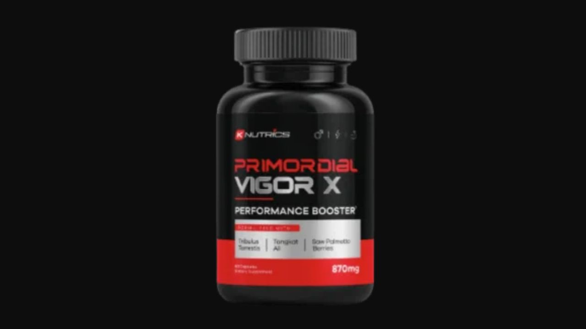

Health Reviews Labs analyzed the ingredient formula behind Primordial Vigor X — a testosterone and circulation support supplement that draws from the most consistently studied compounds in men's health research.

10 Proven Ingredients · Testosterone + Circulation · GMP-Certified · 60-Day Guarantee
→ Click Here for Official SiteThe marketing surrounding Primordial Vigor X includes aggressive claims about physical dimensions that go beyond what supplement ingredients can scientifically support. Our review focuses on what the ingredient formula can actually do, based on published research on each compound. The ingredient formula is a legitimate testosterone and circulation support blend — evaluated here on its own merits.
Primordial Vigor X operates through three interacting pathways — testosterone production support, vascular circulation, and HPA axis hormone optimization. All three need to work simultaneously for consistent improvement in energy, stamina, and sexual function.
Reduces sex hormone binding globulin (SHBG) — the protein that binds testosterone and makes it biologically inactive. Lower SHBG means a higher free testosterone fraction for receptor binding. One of the most studied herbs for natural testosterone optimization with multiple peer-reviewed trials confirming the SHBG mechanism.
Stimulates LH (luteinizing hormone) release from the pituitary gland, signaling Leydig cells in the testes to produce more testosterone. Works on the production side of the testosterone equation, complementing Tongkat Ali's SHBG reduction on the availability side.
Converts to nitric oxide, the primary vasodilating signaling molecule. Improves blood flow to erectile tissue and muscle — the circulatory dimension of performance support. Oral L-Arginine has variable bioavailability; combined with Horny Goat Weed's PDE5 inhibition, the combined effect is more sustained.
Icariin inhibits PDE5 — the enzyme that breaks down cyclic GMP, the second messenger that maintains smooth muscle relaxation and vasodilation. Works downstream of L-Arginine's NO production to extend the duration of the vascular effect.
Modulates the HPA axis — reducing cortisol's testosterone-suppressing effect and improving libido through a pathway independent of direct hormone action. One of the most studied herbs for libido in both men and women, with documented effects in multiple randomized controlled trials.
Called "potency wood" in the Amazon basin, where it has been used for centuries for male libido and sexual responsiveness. The best-studied Amazonian botanical for male sexual function — one study found 62% of men with low libido reported improvements after 2 weeks. The mechanism involves both dopaminergic and alpha-adrenergic pathways.
Supports prostate health and modulates DHT — the potent androgen derived from testosterone conversion. Saw Palmetto helps ensure the DHT-prostate feedback loop doesn't interfere with the testosterone support provided by Tribulus and Tongkat Ali.
Adaptogenic cardiovascular support — improves oxygen delivery and mitochondrial energy production. Also documented for direct effects on nitric oxide synthase activity in penile tissue in several randomized trials.
Essential cofactor for testosterone synthesis in Leydig cells. Zinc deficiency is documented to directly reduce testosterone output. Many men are subclinically zinc deficient, making supplementation a meaningful intervention for testosterone optimization.
Supports testosterone receptor binding and the nervous system signaling involved in arousal. Magnesium deficiency reduces both free and total testosterone. Also involved in muscle recovery and cortisol regulation — both relevant for overall vitality.
Evaluated on its ingredients, Primordial Vigor X contains 10 well-established compounds across testosterone production (Tribulus + Tongkat Ali + Zinc), SHBG reduction (Tongkat Ali), vascular circulation (L-Arginine + Horny Goat Weed), HPA axis (Maca Root), Amazonian libido botany (Muira Puama), and hormonal infrastructure (Magnesium + Saw Palmetto). This is a comprehensive, redundant multi-pathway approach to male hormonal and vascular support. GMP-certified US facility. 60-day guarantee. For men seeking a well-formulated testosterone and circulation supplement — the ingredient foundation is solid.
10 Proven Ingredients · Testosterone + Circulation · 60-Day Guarantee
→ Click Here for Official Site